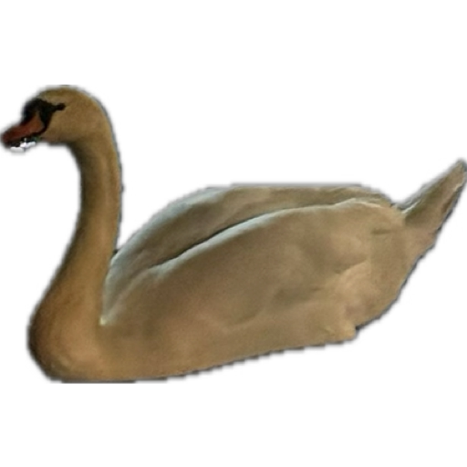

Welcome to Asker Mektupları!
Kutuların yanında gördüğün zamanda mektuplar görünür olacaktırrr
21 Nisan 2024 09:00

HELLLLOOOOOOOOOOO
Gitti sandın de miiiiiiii dshjgdhjsgdjh bak burdayım bak askerden mektup gönderiyorum.
Tamam itiraf... tam olarak mektup değil. Ama mail konusuna gıcık olunca başka bir çare bulmam gerekiyordu sdjhsjdshkjd
Sana hala neden mailini istediğimi söylemedim de mi?
Çünküüüüü......
Neyse bunun cevabını haftaya cevaplayacağım.
Aslında çok basit cevabı ama biraz gıcıklığın zararı olmaz dhsgdhsjgdhjs
Bu mektupların ne için olduğunu sana geldiği vakte baktıysan anlamıssındır diye düşünüyorum.
Askerlik maskerlik pazar şarkı zevkimizi elimizden alamaz!!!
Sen bu şarkıya dans ederken bende asker arkadaşlarımla ortama alışıyor olurum heralde.
O yüzden ikimiz içinde pazar enerjimizi yaşamak senin elinde SJDHSJKDKHJSJ
28 Nisan 2024 09:00

MERHABALAR MERHABALAR PAZAR GÜNÜMÜZ KUTLU OLSUN shdjshdkjshk
Nabersin 1 hafta geçti nasıl gidiyorrr.
Ben alıştım buralara... yani sanırsam alıştım galiba bilmiyorum shjdgsgds
Eğitim meğitim değilde zaman yavaş geçiyor gibi hissediyorum.
Olsun 3 haftadan az kaldı pek bir vakit değil geçer gider.
Veee beklediğin konuuuu.... neden mailini istedim??
Dediğim gibi cevap basit aslında.
Gmail üzerinde ileri zamanlı mektup gönderme özelliği vardı
Sana kolayca ben gittiğimde şarkılarımı gönderebilecektim.
Ama dürüst olayım böyle daha iyi oldu. Neden mi?
Kod yazmayı özlemişim shdghsgdjs biraz alıştırma oldu.
Hiç websitesi geliştirme işlerine girişmemiştim basit birşey yaparak öğrenmiş oldum.
Slowly kadar güzel değil biliyorummm HJSGDHJSGDJHS ama idare eder bence zamanım kısıtlıydı bu kadar çıkarabildim.
Veee evet şarkımız geliyorrrrr bir alkışşş
5 Mayıs 2024 09:00
Bonjour Monjour matmazel
Sevdim bu monjouru ben ya dshdjsghjds
Nasılsınnnn, hayat nasıl, okul nasıl, Aristo nasıl?
Gelecekten gelen mektuplarda 3. bölüme hoşgeldinn
Artık galiba askere alıştım diyebilirim. Öyle böyle zaman geçiyor.
Kitaplarımın hangilerini bitirmişimdir? Tahmin et whatsappdan yaz banaaa.
Bakalım hislerin ne kadar iyileşti sjdhsjdhjks
Tam da bunu yazarken seninle whatsapp dan hisler hakkında konuşuyoruz.
Kolundaki tokanın rengini bilemedim buga soktun hislerimi hatırladın mııı SGDSHJDGSHHSJDHJSJ
Stickerlarımız nasıl olmuş? siteme renk katıyor benceee
Bu da kuğularımızdan bir tanesi sanırım sana hiç atmadım bunu mektuba özel olsun diye saklamak istedim.
Kuğu ile pazar enerjimize dans ettt isterse aristoda gelsinnn.
Bana attığın videodaki gibi dans edin SJHDGSGJHSD
12 Mayıs 2024 09:00
GOODYY PAZARLAR EFENİMMM
SON HAFTA BİTTTİİİİİİ
Tam alıştık şimdi bitiyor askerlik ya hiç adil değilll.
Acaba neler neler yaşamışımdır. Ben de bunu yazarken merak ediyorum açıkçası...
Sınavların veya sunumların başladı mı acaba onu da merak ediyorum projenizde ne durumdasınız.
Umarım herşey yolundadır. Dua ediyorum sana buradann
Şarkılarımı beğendin mi bakalımmm?? Whatsapptan puanla bana hafta ve şarkılarııı
Yarışma şarkıları için kullanacağım en iyi şarkıları sakladım ama hala beklettiğim şarkılar varrrr
Hatta çoçukken çok sevdiklerimi buldum. Artık ben gelince O SES ENERJI programımıza devam ederizz
Bak bu sefer Renayı koydum resmeee shdsghdjsgdhjs
Evveeet gelişim yakınnn ama özledin miii beni SDJSHDJSHDKJS
GICIK ETMEYE GELİYORUMMMMM BEKLE BENİİİ
Şaka maka artık evime dönmek istiyorum.
Modumu bu şekilde ifade ediyorumm
14 Mayıs 2024 09:00
Yarın çıkıyorummmmmmm YARIN GELİYORUMMMMM
Yani umarımmm, umarım birşey yanlış gitmemiştir ve askerlik uzamamıştır...
Eğer çıkamazsam limonun bakışı gibi komutana bakış atacağım
Bu arada askerliği 6 ay yapsam hayvanlar alemini dolduracaktım her mektuba 1 tane diye diye SDHSGHDJS
Yarın akşam evde olmayı umut ediyorum hayırlısı artık. Dua et banaaa
Şuan belki toplanıyor bile olabilirim.
Geri geldiğimde bana bir parti hazırlarsın heraldeee sjdhsjkkgdf
Mektuplarımı okuduğun için gerçekten teşekkür ederimmmm.
En kısa zamanda görüşmek üzere... hem telefondan hem de inşallah yüz yüze...